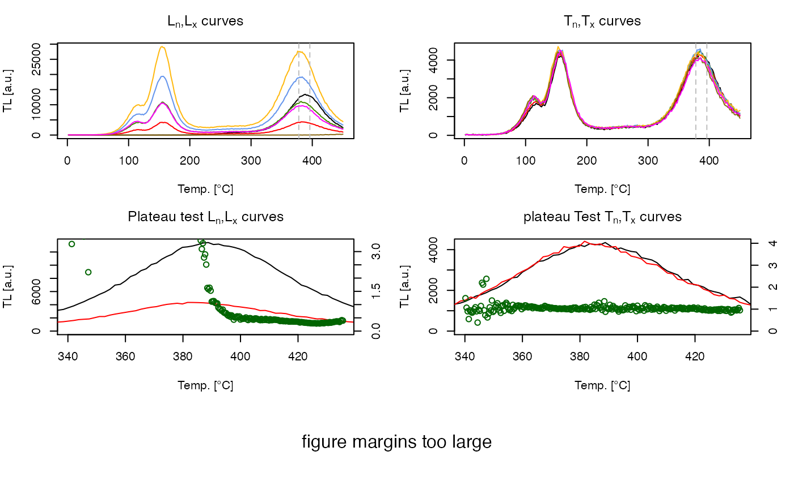
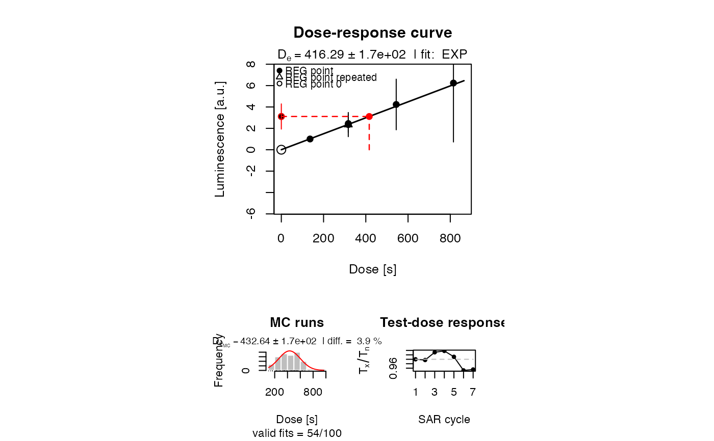

analyse_SAR.TL.RdThe function performs a SAR TL analysis on a RLum.Analysis object including growth curve fitting.
analyse_SAR.TL(object, object.background, signal.integral.min, signal.integral.max, integral_input = "channel", sequence.structure = c("PREHEAT", "SIGNAL", "BACKGROUND"), rejection.criteria = list(recycling.ratio = 10, recuperation.rate = 10), dose.points, log = "", ...)
| object | RLum.Analysis-class: input object containing data for analysis |
|---|---|
| object.background | currently not used |
| signal.integral.min | integer (required):
requires the channel number for the lower signal integral bound
(e.g. |
| signal.integral.max | integer (required):
requires the channel number for the upper signal integral bound
(e.g. |
| integral_input | character (with default):
defines the input for the the arguments |
| sequence.structure | vector character (with default):
specifies the general sequence structure. Three steps are allowed
( |
| rejection.criteria | list (with default): list containing rejection criteria in percentage for the calculation. |
| dose.points | numeric (optional): option set dose points manually |
| log | character (with default): a character string which contains "x" if the x axis is to be logarithmic, "y" if the y axis is to be logarithmic and "xy" or "yx" if both axes are to be logarithmic. See plot.default). |
| ... | further arguments that will be passed to the function plot_GrowthCurve |
A plot (optional) and an RLum.Results object is returned containing the following elements:
data.frame containing De-values and further parameters
data.frame of all calculated Lx/Tx values including signal, background counts and the dose points.
data.frame with values that might by used as rejection criteria. NA is produced if no R0 dose point exists.
This function performs a SAR TL analysis on a set of curves. The SAR procedure in general is given by Murray and Wintle (2000). For the calculation of the Lx/Tx value the function calc_TLLxTxRatio is used.
Provided rejection criteria
[recyling.ratio]: calculated for every repeated regeneration dose point.
[recuperation.rate]: recuperation rate calculated by
comparing the Lx/Tx values of the zero regeneration point with the Ln/Tn
value (the Lx/Tx ratio of the natural signal). For methodological
background see Aitken and Smith (1988)
THIS IS A BETA VERSION
None TL curves will be removed from the input object without further warning.
0.2.0 (2018-01-21 17:22:38)
Kreutzer, S. (2018). analyse_SAR.TL(): Analyse SAR TL measurements. Function version 0.2.0. In: Kreutzer, S., Burow, C., Dietze, M., Fuchs, M.C., Schmidt, C., Fischer, M., Friedrich, J. (2018). Luminescence: Comprehensive Luminescence Dating Data Analysis. R package version 0.9.0. https://CRAN.R-project.org/package=Luminescence
Aitken, M.J. and Smith, B.W., 1988. Optical dating: recuperation after bleaching. Quaternary Science Reviews 7, 387-393.
Murray, A.S. and Wintle, A.G., 2000. Luminescence dating of quartz using an improved single-aliquot regenerative-dose protocol. Radiation Measurements 32, 57-73.
##load data data(ExampleData.BINfileData, envir = environment()) ##transform the values from the first position in a RLum.Analysis object object <- Risoe.BINfileData2RLum.Analysis(TL.SAR.Data, pos=3) ##perform analysis analyse_SAR.TL(object, signal.integral.min = 210, signal.integral.max = 220, log = "y", fit.method = "EXP OR LIN", sequence.structure = c("SIGNAL", "BACKGROUND"))#> Warning: row names were found from a short variable and have been discarded#> [plot_GrowthCurve()] Fit: EXP OR LIN (interpolation) | De = 415.65 | D01 = 11075068.87#> #> [RLum.Results-class] #> originator: analyse_SAR.TL() #> data: 3 #> .. $data : data.frame #> .. $LnLxTnTx.table : data.frame #> .. $rejection.criteria : data.frame #> additional info elements: 1